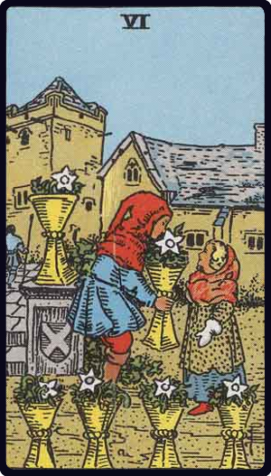

Upright Meaning
The past may offer comfort, reconnection or a useful lesson.
Cups · Nostalgia
Six of Cups brings memories, kindness and innocence into focus. At its centre is movement toward balance or recovery through cups themes. Rather than treating the card as a fixed prediction, use these themes to describe what may be happening and what deserves your attention.

Keywords: memories, kindness, innocence
The past may offer comfort, reconnection or a useful lesson.
Idealising the past may prevent you from engaging fully with the present.
For this card, start with the question you actually asked. Then notice how memories or kindness changes the meaning. The same card can feel supportive, challenging or neutral depending on the position, surrounding cards and real circumstances.
In love and relationships, consider how memories is being expressed between people. Emotional honesty and reciprocity are especially worth noticing. Ask whether the card describes a feeling, a behaviour, a relationship pattern or a choice that needs to be made.
For work, study or projects, use Six of Cups to examine kindness and innocence. Notice what is being felt, expressed, received or held back. A useful question is: what would a realistic next step look like if I acted on the card's theme without overinterpreting it?
For personal growth, explore the relationship between memories and kindness. Notice one habit, reaction or belief that matches the card, then imagine a healthier or more deliberate version of it. Small observations are often more useful than trying to force a dramatic change.
Let the artwork speak before you reach for a definition. Notice the visual detail that catches your attention first, then connect it to memories, kindness or innocence. Record your own impression and compare it with the traditional meaning. This keeps intuition involved without treating every symbol as having only one possible answer.
If Six of Cups appears in a reading, try this: name the strongest theme, connect it to the position in the spread, and identify one action or observation you can test in real life. An upright card does not guarantee an outcome; it describes an energy or perspective you can explore.
The Six of Cups brings memory, familiarity and earlier experiences into the present. Nostalgia can comfort, but the past should not be mistaken for a complete guide to today.
An old friend or opportunity returns. Appreciate the history while checking whether the situation and both people have changed.
Reading check: Which part of this example is supported by the question and the surrounding cards, and which part would be an assumption?
Practice question: “How can I understand the emotional side of this situation?” This is a fictional learning prompt. It is deliberately open, so the card can be explored without pretending to know a fixed outcome.
Step 1 — Start with this card's themes: The past may offer comfort, reconnection or a useful lesson. The keywords memories, kindness, innocence offer a starting point, not a checklist that must all apply at once.
Step 2 — Choose what is relevant: For this card, start with the question you actually asked. Then notice how memories or kindness changes the meaning. The same card can feel supportive, challenging or neutral depending on the position, surrounding cards and real circumstances. For this question, identify the one phrase or theme that most directly addresses what was asked. Explain why it fits the question and the card's position before adding a wider interpretation.
Step 3 — Test a different angle: Idealising the past may prevent you from engaging fully with the present. Even when the card appears upright, its reversed meaning can be a useful contrast: it asks what an unhelpful extreme, obstacle or overlooked perspective might look like. Do not assume a reversal is automatically negative.
Step 4 — Connect it to real circumstances: If Six of Cups appears in a reading, try this: name the strongest theme, connect it to the position in the spread, and identify one action or observation you can test in real life. An upright card does not guarantee an outcome; it describes an energy or perspective you can explore. Check the interpretation against what you actually know. A card cannot verify another person's thoughts, diagnose a problem or guarantee what will happen.
Step 5 — Write a grounded response: Complete this sentence in your own words: “The theme I want to pay attention to is ______. One small, sensible thing I can do or find out is ______.” The second blank should be something within your control.
Two children share cups filled with flowers in a familiar courtyard. The older-looking child offers rather than takes, and the scene is sheltered by the surrounding buildings. The flowers transform ordinary vessels into tokens of memory, kindness and gestures carried from one time into another.
The Six of Cups explores memory, generosity, childhood influences and the way the past shapes the present. It can invite reconnection or a gentler approach, but nostalgia can edit out difficult details. Its shadow is idealising earlier times, remaining in an old role or expecting the present to recreate a past that cannot return.
Someone is thinking about contacting a former school friend. The card may support a warm message that recognises the time passed without assuming the friendship will resume exactly as it was. Let the present-day response shape what happens next.
Which memory is nourishing me, and which may be keeping me stuck? How can I bring a quality from the past into my present life?
Reading discipline: Test this interpretation against the question, position and surrounding cards. It is a reflective possibility, not evidence about another person's feelings or a guaranteed outcome.
Compare this card with another card, save it to your favourites, or record your own interpretation in the journal.